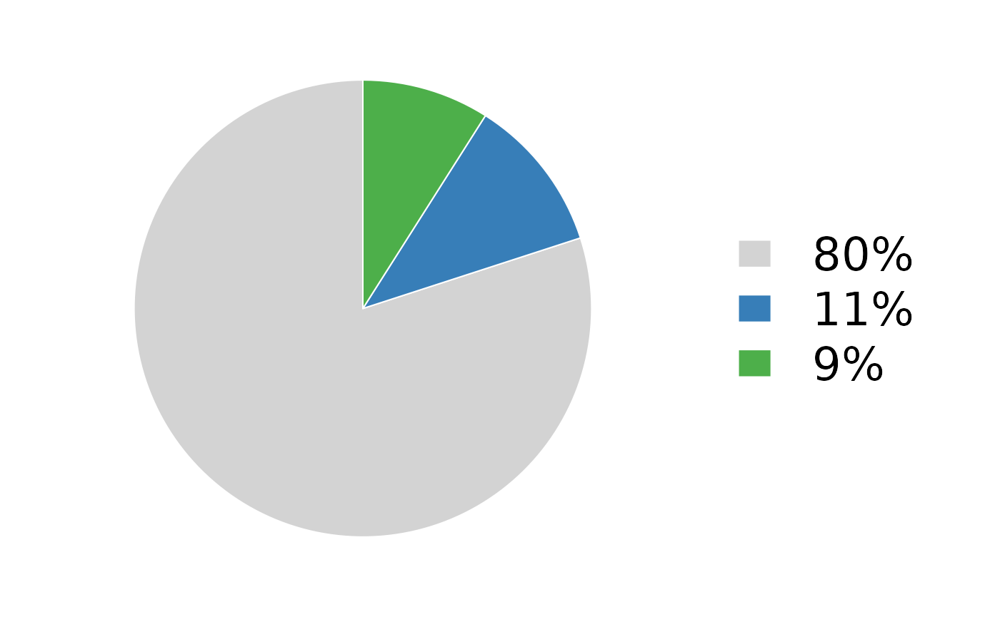

piechart.RmdLevel: Intermediate
This shows how to create a pie chart using base R, such as the ones in Figure 1D (Solomon et al. 2020). The chart shows the allele frequencies of mutations in a tumour sample.

variantColors <- RColorBrewer::brewer.pal(4, "Set1")
names(variantColors) <- c("r", "c", "s", "v")
par(mar = c(0, 0, 0, 10))
pie(c(0.80, 0.11, 0.09), col = c("lightgrey", variantColors[c("c", "s")]), border = "white", labels = "", init.angle = 90)
rng <- par("usr")
legend(rng[2] - 0.1, 0, yjust = 0.5, legend = c("80%", "11%", "9%"), fill = c("lightgrey", variantColors[c("c", "s")]), bty = "n", border = "white", cex = 2, xpd = TRUE)Solomon, Benjamin J., Lavinia Tan, Jessica J. Lin, Stephen Q. Wong, Sebastian Hollizeck, Kevin Ebata, Brian B. Tuch, et al. 2020. “RET Solvent Front Mutations Mediate Acquired Resistance to Selective RET Inhibition in RET-Driven Malignancies.” Journal of Thoracic Oncology 15 (4): 541–49. https://doi.org/10.1016/j.jtho.2020.01.006.